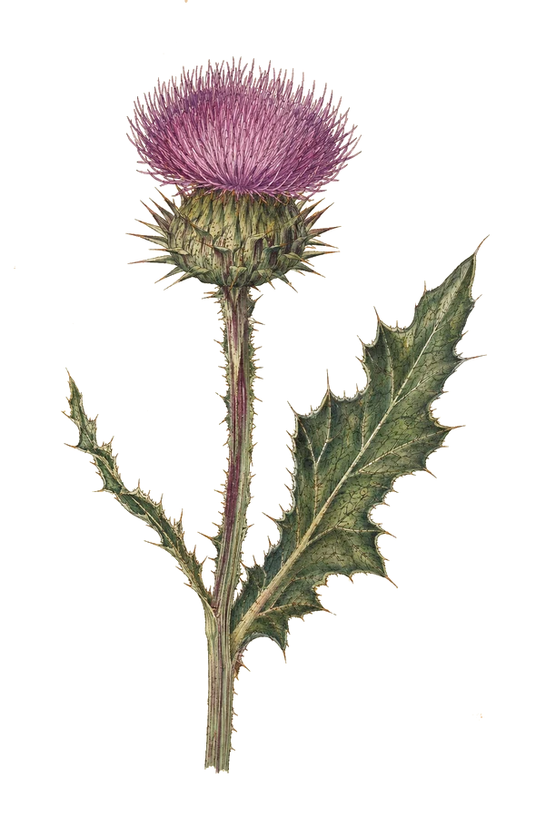
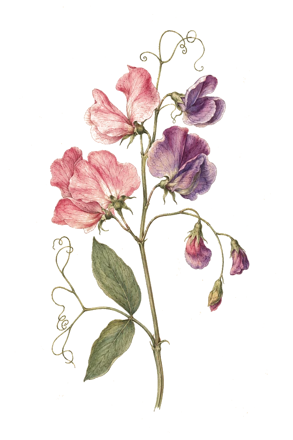
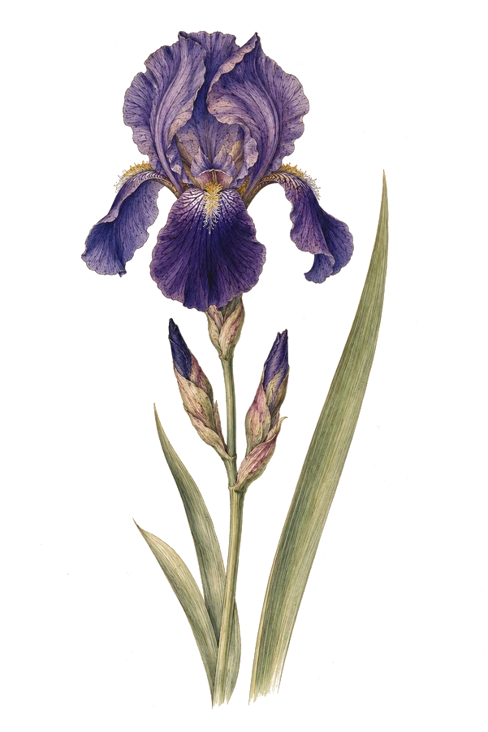
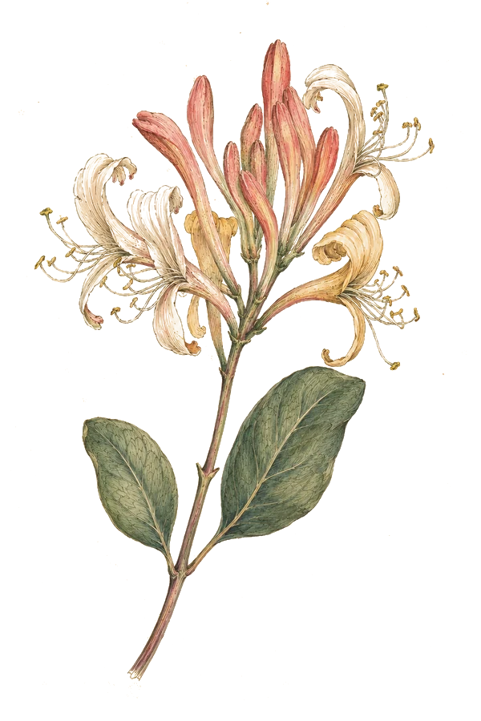

Plate II
 →
→
→
→
→
→
→
→
Selected specimens
collected in the field, 2013 to present

Fig. 1 · Carduus energeticus
Bitwatt
Habitat: Energy · Blockchain
Placeholder observationSettlement time reduced by 60% after re-architecting the trading pipeline.

Fig. 2 · Lathyrus recruitans
Talentvine
Habitat: Recruitment · SaaS
Placeholder observationMVP designed, architected and shipped in eight weeks, end to end.

Fig. 3 · Iris commercialis
iFootage Gear
Habitat: E-commerce · Product
Placeholder observationCheckout conversion up 32% after a ground-up storefront rebuild.

Fig. 4 · Lonicera referens
Mention Me
Habitat: Referral · Platform
Placeholder observationClient-facing platform scaled past three million end users.
Gardens I've tended along the way
- Mention Me
- Debenhams
- OVO Energy
- Belstaff
- Evans Cycles
- Biscuiteers
- University of Worcester
- Workvine